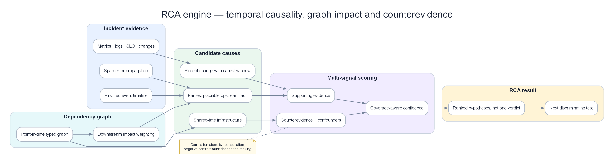

Chapter 11 — Root Cause Analysis (RCA)¶
Phân tích nguyên nhân gốc rễ (Root Cause Analysis - RCA) là lớp thông minh chịu trách nhiệm trả lời câu hỏi "TẠI SAO sự cố này lại xảy ra?". Nó biến một nhóm các cảnh báo tương quan thành một chẩn đoán chính xác: thành phần nào bị lỗi, loại lỗi là gì và các bằng chứng đi kèm. Chương này giới thiệu mọi kỹ thuật RCA từ dựa trên topology, đồ thị nhân quả, GNN, đến các giải pháp hỗ trợ bởi LLM.

Poster: first-red, span error propagation, downstream weighting và counter-evidence cùng đi vào một bảng xếp hạng có giải thích.
Prerequisites¶
- 09 — Anomaly Detection — các tín hiệu bất thường làm đầu vào cho RCA
- 10 — Alert Correlation — các nhóm incident tương quan
- 04 — Loki — logs đóng vai trò làm bằng chứng RCA
- 05 — Tempo — traces đóng vai trò làm bằng chứng RCA
Related Documents¶
- 12 — LLM Agent — sử dụng đầu ra của RCA để điều tra và xử lý
- 13 — Remediation — kết quả RCA giúp định hướng lựa chọn phương án khắc phục
- 14 — Production Operations — đo accuracy RCA, game day drills
- 15 — Pattern Library — causal diagnosis patterns
- 16 — Domain Packs — RCA cho payment cascade và fraud confounders
- 17 — Benchmark Replay — correlation≠causation scenarios
Next Reading¶
Sau chương này, hãy chuyển sang 12 — LLM Agent.
Table of Contents¶
- Why Automated RCA?
- RCA Architecture Overview
- Signal Collection for RCA
- Topology-Based RCA
- Causal Graph RCA
- Bayesian Network RCA
- Graph Neural Network (GNN) RCA
- Log-Based RCA — Evidence Extraction
- Trace-Based RCA — Span Analysis
- Change Correlation (Deployment-Driven RCA)
- RCA Evidence Scoring and Ranking
- RCA Output Contract
- Historical Pattern Matching (Case-Based RCA)
- Production Architecture
- Common Mistakes
- Monitoring RCA Quality
- Scaling
- Security
- Cost
- Tư duy sâu: Correlation≠Causation, Multi-root, Evidence Quality, Time Budget
- Production Review
Cách đọc chapter này: từ triệu chứng đến giả thuyết kiểm chứng được¶
Chương này cố ý không chứa code triển khai.
Một RCA engine thật không trả về một service cùng con số 0,92 rồi gọi đó là “root cause”. Nó phải đưa ra chuỗi lập luận: tín hiệu nào xuất hiện trước, lỗi đi qua cạnh dependency/trace nào, node nào tạo downstream impact, change nào có khả năng tác động, bằng chứng nào phản bác giả thuyết, dữ liệu nào đang thiếu và bước kiểm chứng rẻ nhất là gì.
| Bước đọc | Câu hỏi |
|---|---|
| 1. Vấn đề | Detector/engine này giải quyết pain gì (false positive, cascade, MTTR…)? |
| 2. Ý tưởng | Trực giác 2–3 câu, không công thức |
| 3. Data in | Metric/log/trace/event nào, window nào, feature nào? |
| 4. Thuật toán | Các bước tính toán / model flow |
| 5. Output | Schema sự kiện, score, rank, action proposal? |
| 6. Trade-off | Ưu / nhược / chi phí / giải thích được không? |
| 7. When | Dùng khi nào — và khi nào đừng dùng |
Hợp đồng của RCA engine¶
Với một incident, engine phải trả được sáu câu hỏi:
| Câu hỏi | Câu trả lời đạt chuẩn | Câu trả lời chưa đủ |
|---|---|---|
| Root candidate là gì? | payment-db, failure mode pool_exhaustion |
“database có vẻ lỗi” |
| Vì sao xếp hạng cao? | Đỏ trước 43 giây; 4 service downstream lỗi; DB không có callee lỗi; trace dừng tại acquire connection | “score 0,91” |
| Điều gì phản bác? | CPU DB bình thường; topology snapshot cũ 12 phút | Không có negative evidence |
| Có root khác không? | Candidate thứ hai auth-cache, thuộc component tách rời |
Ép mọi alert vào một root |
| Confidence nghĩa gì? | 0,78 sau calibration; evidence quality 0,71 | Probability giả chưa hiệu chuẩn |
| Kiểm chứng thế nào? | So pool wait old/new version; query active connections; canary rollback | “hãy kiểm tra logs” |
RCA là ranking có bằng chứng và uncertainty, không phải oracle. Engine được phép trả uncertain hoặc hai root độc lập. Một câu trả lời trung thực “top-1 0,52, graph thiếu 35% edge” hữu ích hơn một root giả 0,96.
1. Why Automated RCA?¶
Ý TƯỞNG
RCA tự động không tìm "sự thật tuyệt đối" — nó sinh giả thuyết có hạng mục bằng chứng đủ tốt để on-call quyết định trong phút đầu. Mục tiêu sản phẩm là giảm time-to-plausible-hypothesis, không phải độ chính xác academic 100%.
Important
Mọi pipeline remediation tự động (Chương 13) chỉ được gắn vào RCA khi confidence + evidence quality vượt ngưỡng và failure mode nằm trong allowlist. RCA sai + auto-remediate = outage do AIOps.
The Manual RCA Problem¶
Quy trình thủ công thường bắt đầu bằng service phát page to nhất. Đó thường là downstream gần người dùng, không phải nơi fault bắt đầu. Ví dụ checkout error 18%, payment error 12%, postgres pool wait 96%; checkout đỏ nhất nhưng restart checkout không giải phóng connection pool. RCA tốt đảo câu hỏi từ “dashboard nào đỏ nhất?” sang “node nào giải thích được nhiều triệu chứng nhất mà bản thân không bị một upstream đỏ khác giải thích?”.
RCA tự động nên rút 20 phút tìm kiếm thành một shortlist trong 30–90 giây, nhưng không bỏ bước kiểm chứng. Nó gom topology, trace, log, metric và change; xây candidate; chấm bằng chứng thuận/nghịch; rồi xuất một action kiểm tra. Mục tiêu là time-to-plausible-and-testable-hypothesis, không phải tự động viết postmortem.
What RCA Is and Is NOT¶
| RCA là | RCA không phải |
|---|---|
| Giải thích incident đã được correlation gom | Detector anomaly mới |
| Xếp hạng component/failure mode | Chỉ sort alert theo timestamp |
| Kết hợp evidence độc lập | Cộng mù mọi score |
| Nêu giả thuyết và phản chứng | Khẳng định causation từ correlation |
| Hỗ trợ multi-root và unknown | Luôn ép đúng một root |
| Đề xuất phép kiểm chứng | Tự remediation mọi candidate |
2. RCA Architecture Overview¶
Một engine thực tế có hai vòng. Vòng fast-path trong vài giây dùng topology, temporal order, trace error propagation và change proximity để trả shortlist. Vòng deep-path trong vài chục giây bổ sung log evidence, historical match, causal/Bayesian/GNN nếu có. Kết quả được publish dần: bản partial sớm không được ghi đè âm thầm bằng bản final; mỗi revision có version và lý do thay đổi rank.
Luồng quyết định:
- Nhận incident đã dedup/correlation, giữ toàn bộ event time và source quality.
- Chụp topology tại thời điểm incident, không mặc định graph hiện tại.
- Sinh candidate từ node đỏ, recent change, first-error span và shared infrastructure.
- Tính feature: temporal precedence, upstream/downstream consistency, blast radius, trace propagation, change fit, log specificity, recovery evidence.
- Tạo negative evidence: candidate có upstream đỏ hơn không, chỉ đỏ sau retry không, change có ngoài blast radius không, signal có thể do data gap không.
- Rank multi-signal; tách candidate phụ thuộc và component độc lập.
- Calibrate confidence, cap theo evidence quality và graph freshness.
- Trả top-k cùng reasoning path và validation step; cập nhật khi evidence mới đến.
Dữ liệu tối thiểu để gọi là engine¶
Không có topology vẫn có thể rank bằng change/log/time, nhưng phải hạ confidence. Không có trace vẫn có topology-metric RCA. Không có timestamp đáng tin thì không được dùng temporal precedence. Mỗi signal phải mang event_time, ingest_time, entity, source, quality, baseline/current, incident_id; change cần scope và rollout fraction; edge topology cần direction, observation time và confidence.
3. Signal Collection for RCA¶
Signal Collection Schema¶
Mỗi bằng chứng được chuẩn hóa thành một assertion có thể kiểm tra: “payment-db pool wait tăng từ 12 ms lên 820 ms lúc 10:02:14”, “span acquire connection lỗi trước checkout error 43 giây”, “release payment-v42 bắt đầu 10:01:20 trên 25% pod”. Không lưu mỗi anomaly=true; phải giữ current, expected, start/end, sample count và quality.
Đồng hồ, cửa sổ và dữ liệu đến trễ¶
Thứ tự thời gian chỉ đáng tin nếu clock skew được đo. Service A ghi lỗi 10:00:02 nhưng clock nhanh 40 giây; service B ghi 09:59:40 với clock đúng. Sort raw timestamp sẽ gọi B root dù A phát lỗi thật trước. Engine cần clock-offset từ NTP/collector, dùng trace parent-child khi có, và biểu diễn interval uncertainty: A bắt đầu trong [09:59:20,10:00:00], B trong [09:59:38,09:59:42]. Nếu interval chồng nhau, temporal feature phải gần 0, không được tạo thứ tự giả.
Late event cũng làm rank thay đổi. Fast-path lúc 10:01 có thể chọn checkout; trace batch đến 10:02 cho thấy DB span lỗi từ 09:59. Output revision 2 phải nói “rank changed because 312 late spans arrived”, không chỉ đổi root trên UI.
4. Topology-Based RCA¶
Giải pháp RCA đơn giản và tin cậy nhất cho microservices giám sát tốt. Thuật toán duyệt ngược dependency graph từ triệu chứng lỗi về các node trông giống gốc.
Vấn đề / ý tưởng¶
| Vấn đề | Correlation nói “payment + order + gateway là một incident”, nhưng chưa nói sửa node nào trước. Người vẫn tốn 15–30 phút đọc dashboard. |
| Ý tưởng | Root candidate mạnh là node anomaly và có callee khỏe (fault bắt đầu tại đây) và caller bị ảnh hưởng (cascade ra ngoài). Duyệt graph; chấm điểm “lá” của vùng đỏ. |
Important
Topology RCA tìm chỗ tập trung lỗi trong mesh. Nó không chứng minh causation so với confounder AZ/DNS — xem §20.1.
Input từ AIOps data plane¶
| Input | Nguồn | Vai trò |
|---|---|---|
| Incident group + services_affected | Correlation engine | Tập đỏ để duyệt |
| Dependency graph (có hướng) | Trace / mesh / catalog | Cạnh caller → callee |
| Snapshot metric theo service | Prometheus qua data plane | error_rate, latency vs baseline |
| Cờ anomaly (tuỳ chọn) | Detector Ch08 | Tín hiệu “đỏ?” nhanh hơn |
Cách hoạt động (các bước)¶
- Lấy change trong lookback nhưng chỉ giữ change có scope giao với vùng incident hoặc shared dependency.
- Tính temporal fit theo rollout: symptom có tăng khi rollout tăng và giảm khi rollback không?
- So canary/stable: cùng traffic mix, version mới có error/latency cao hơn không?
- Tìm signature mới theo version: template log, span attribute, config diff, feature flag cohort.
- Kiểm tra blast compatibility: change ở payment không giải thích auth độc lập trừ khi có shared resource.
- Sinh candidate
change × failure_mode, không chỉ service. Một deploy có thể gây schema mismatch, pool leak hoặc CPU regression với remediation khác nhau. - Trừ điểm khi change không được expose tới request lỗi, onset trước change, stable version lỗi tương đương, hoặc rollback không cải thiện.
- Lấy subgraph gồm service bị ảnh hưởng, upstream/downstream trong bán kính giới hạn và shared resource như DB, queue, DNS, zone.
- Đánh dấu mỗi node: anomaly start, severity, signal quality, recent change; mỗi edge: request volume, error propagation, trace coverage, freshness.
- Sinh candidate là node đỏ hoặc recent-change có đường tới vùng đỏ. Node chỉ là downstream symptom vẫn có thể candidate nhưng nhận penalty.
- Duyệt từ symptom ngược hướng caller→callee. Candidate mạnh khi callee của nó khỏe hoặc lỗi bắt đầu tại chính candidate, trong khi nhiều caller downstream đỏ sau đó.
- Tính downstream impact có trọng số, không chỉ đếm node. Một checkout critical nặng hơn 20 batch nội bộ; edge mang 80% traffic nặng hơn edge 1%.
- Trừ điểm nếu candidate có upstream/callee đỏ sớm hơn, graph stale, cạnh không có traffic trong incident, hoặc anomaly chỉ bắt đầu sau retry storm.
- Gom candidate có common infrastructure; giữ nhiều root khi vùng đỏ tách thành component không nối được.
payment anomaly, callee khỏe, caller đỏ → topology score cao.
Case bằng số: dependency graph và downstream weighting¶
Graph có hướng caller → callee:
web → checkoutmang 1.000 RPS, business weight 5.checkout → paymentmang 600 RPS, weight 5.checkout → inventorymang 400 RPS, weight 4.payment → postgresmang 550 RPS, weight 5.reporting → postgresmang 40 RPS, weight 1.
Anomaly start: postgres pool wait 10:02:10; payment error 10:02:34; checkout error 10:02:51; web success drop 10:03:02; reporting timeout 10:03:20. Inventory khỏe. Nếu chỉ đếm số alert, checkout có nhiều metric đỏ nhất và có thể đứng đầu. Nếu chỉ chọn timestamp đầu, postgres đứng đầu nhưng vẫn chưa đủ: monitoring DB có thể nhạy hơn và báo sớm dù lỗi bắt đầu tại network.
Topology consistency của postgres mạnh vì nó không có callee ứng dụng đỏ, còn hai caller độc lập payment/reporting đều đỏ sau đó. Downstream impact không đếm 4 node; nó cộng luồng đã chuẩn hóa: payment/checkout/web trên path critical cộng trọng số lớn, reporting nhỏ. Một cách minh họa: blast score của postgres = 0,6×5 payment + 0,6×5 checkout + 0,6×5 web + 0,04×1 reporting = 9,04; payment chỉ giải thích checkout/web, khoảng 6,0; checkout chỉ giải thích web, khoảng 3,0. Các hệ số không phải xác suất, chúng là policy cần calibration.
Candidate postgres nhận thêm temporal +0,8 vì đỏ trước tối thiểu 24 giây, leaf-of-red-region +1,0, two-independent-callers +0,7. Payment nhận penalty −0,6 vì callee postgres đỏ trước. Kết quả có thể postgres 0,86, payment 0,54, checkout 0,31. On-call thấy đường giải thích postgres → payment → checkout → web và nhánh postgres → reporting, không chỉ score.
Edge case: fan-out làm đếm downstream sai¶
Service config được 80 service gọi nhưng chỉ khi startup; trong incident không có traffic qua cạnh. Topology catalog tĩnh khiến config có downstream count 80 và luôn thắng blast radius. Edge phải được activation-weight bằng request/span trong cửa sổ. Nếu chỉ 2/80 service gọi config lúc đó, 78 cạnh không đóng góp.
Ngược lại, một payment service chỉ có một caller checkout nhưng phục vụ 70% doanh thu. Đếm node xem blast nhỏ; business weighting thấy impact lớn. Weight phải versioned, có cap để một owner không tự gán service của mình bằng 100 và áp đảo mọi evidence.
Edge case: cycle, retry và circuit breaker¶
Graph thực có cycle A→B→C→A do callback. Backward traversal không được đi vô hạn; collapse strongly connected component hoặc giới hạn path và ghi rõ ambiguity. Retry làm traffic B→DB tăng sau DB slowdown; CPU B có thể đỏ mạnh hơn DB. Downstream weighting phải phân biệt impact propagation với load amplification, nếu không chọn B vì nó “ảnh hưởng nhiều”.
Circuit breaker lại cắt propagation: payment không gọi DB nữa, DB metric hồi phục nhưng checkout vẫn lỗi fast-fail. Snapshot cuối incident làm DB trông khỏe và payment là leaf đỏ. Engine phải dùng graph/time series theo episode, không chỉ trạng thái hiện tại; recovery của root xảy ra trước recovery downstream chính là positive evidence.
Output / on-call thấy gì¶
On-call cần thấy rollout timeline cạnh symptom: “v42 10% lúc 10:00, error new=8,1%/old=0,7% lúc 10:02; rollout 50% lúc 10:04, fleet error 4,3%; rollback 10:08, new traffic về 0 và error hồi 10:10.” Đây là dose-response evidence mạnh hơn “deploy cách incident 5 phút”.
Case khó: deploy trùng traffic spike¶
RPS [800, 820, 1.100, 1.500, 1.900], rollout new version [0, 10, 25, 50, 50]%. Error old version [0,7; 0,8; 0,8; 0,9; 1,0]%; error new [—; 6,2; 6,5; 6,3; 6,4]%. Fleet error tăng cùng cả traffic và rollout, nên correlation thô mơ hồ. Cohort comparison cho thấy old khỏe dưới cùng traffic, new lỗi ổn định; deploy là candidate mạnh.
Đổi dữ liệu: old error [0,7; 0,8; 2,5; 5,0; 7,2]%, new [—; 0,9; 2,7; 5,1; 7,0]%. Hai version hỏng giống nhau khi traffic tăng; rollback new không giải quyết. Capacity/shared dependency là candidate, deploy chỉ trùng thời điểm. RCA engine thực phải biết nói “recent change present but contradicted by version cohort”.
Edge case: feature flag và config không có deploy¶
Nếu change feed chỉ lấy CI/CD, flag bật 30% tenant hoặc secret rotation sẽ vô hình. Mỗi change cần actor, type, scope entity/tenant/region, old/new hash, rollout fraction, event time và rollback link. Manual SSH không được audit phải hạ evidence completeness, không mặc định “không có change”.
Edge case: rollback thành công giả¶
Error giảm sau rollback có thể vì traffic campaign kết thúc cùng lúc hoặc cache tự hồi. Counterfactual canary/stable, region không rollback và repeated exposure giúp. Một lần “action rồi metric tốt” là supportive evidence, không proof; engine ghi recovery lag và alternative explanations.
Ưu / nhược + khi nào dùng¶
| Ưu | Nhược |
|---|---|
| Giải thích được; không cần label train | Mù bug code nếu metric không anomaly |
| Nhanh (ms–giây) | Sai nếu graph đảo/stale |
| Thuật toán đầu tốt trong ensemble | Shared infra (AZ) trông như multi-root ồn |
| Dùng khi | Không dùng một mình khi |
|---|---|
| Microservice có trace, SLI rõ | Tuần đầu graph trống/thưa |
| Luôn là thành viên rẻ của ensemble | Deploy/change khả dĩ — thêm change RCA |
Algorithm: Backward Traversal¶
Backward traversal chỉ là candidate generator. Nó không chứng minh root và không nên tự page remediation. Độ phức tạp cần được chặn bằng incident subgraph, edge activation và top-k frontier; nếu duyệt cả service mesh 2.000 node cho mỗi alert storm, RCA tự trở thành incident.
5. Causal Graph RCA¶
Causal graph vượt correlation để mô hình cấu trúc nhân quả giữa metrics (và đôi khi services). Dùng khi topology không tách được reverse causation (retry storm: error → CPU).
Vấn đề / ý tưởng¶
| Vấn đề | Tương quan cao giữa error_rate và CPU không nói cái nào là root — hoặc cả hai bị biến thứ ba điều khiển. |
| Ý tưởng | Từ ma trận time series đa biến, khôi phục DAG độc lập có điều kiện (vd. PC) và chấm các node giải thích anomaly downstream. |
Input từ AIOps data plane¶
| Input | Nguồn | Vai trò |
|---|---|---|
| Ma trận metric căn chỉnh | Feature store / Prom range | Cột = tín hiệu trong cửa sổ incident |
| Prior edges (tuỳ chọn) | Topology | Ràng buộc mềm cho search |
| Sampling interval | Config pipeline | Đủ điểm cho CI test |
Cách hoạt động (các bước) — phác PC¶
PC và các phương pháp discovery bắt đầu bằng graph dày rồi loại cạnh khi hai biến độc lập có điều kiện trên tập biến khác. Trong vận hành, không nên để thuật toán tự do đảo mọi cạnh: direction từ trace/call graph, nguyên tắc thời gian “future không gây past”, và domain constraint như traffic có thể gây CPU nhưng CPU không tạo traffic user cần làm prior. Discovery bổ sung edge metric, không thay kiến thức hệ thống.
Case bằng số: tương quan cao nhưng thứ tự loại ứng viên sai¶
Mỗi 30 giây ta có ba chuỗi:
- DB pool wait: [10, 11, 12, 180, 420, 650, 700].
- Payment retry rate: [0, 0, 1, 2, 18, 42, 60].
- Payment CPU: [35, 36, 35, 38, 57, 78, 91].
Retry và CPU tương quan rất cao; một engine correlation có thể chọn CPU saturation. Nhưng pool wait đổi ở bước 4, retry/CPU đổi rõ ở bước 5. Khi điều kiện trên pool wait, quan hệ retry–CPU vẫn có thể là retry gây CPU; khi điều kiện trên retry, pool wait vẫn giải thích retry. Câu chuyện hợp lý là pool wait → retry → CPU. CPU đỏ nhất và muộn nhất là hậu quả.
Giờ thêm traffic [100, 102, 101, 220, 410, 650, 800] cùng tăng từ bước 4. Traffic có thể là confounder gây cả pool wait và CPU. Nếu không có traffic trong ma trận, discovery dễ gán pool wait → CPU. Có traffic, cạnh trực tiếp có thể biến mất khi condition on traffic. “Causal graph” không vượt được biến ẩn; thiếu confounder quan trọng vẫn tạo DAG sai rất tự tin.
Thứ tự thời gian: “đỏ trước” là filter, không phải proof¶
Temporal precedence hữu ích để loại candidate xuất hiện sau triệu chứng mà nó được cho là gây ra. Nó yếu hơn khi dùng để khẳng định root. Bốn lý do thường gặp:
- Detector sensitivity khác nhau: DB detector cần 5 phút persistence, checkout detector chỉ cần 1 phút; checkout đỏ trước dù DB fault trước.
- Sampling khác nhau: log realtime, metric scrape 60 giây, trace export batch 2 phút.
- Clock skew và late arrival đảo timestamp.
- Root im lặng: config sai lúc deploy nhưng chỉ gây lỗi khi cache hết hạn 20 phút sau.
Vì vậy engine dùng onset interval thay timestamp đơn. Nếu checkout onset [10:02:00,10:02:20], DB onset [10:01:40,10:03:10], interval chồng nhau; không thưởng DB “đỏ trước”. Nếu DB [10:00:10,10:00:20] và checkout [10:02:00,10:02:20], precedence mạnh. Temporal score nên tăng theo lead có ý nghĩa so với sampling uncertainty, và cap khi detector latency không biết.
Negative evidence từ thứ tự recovery¶
Root fix thường precede downstream recovery. Rollback payment lúc 10:15; DB pool wait giảm 10:15:20; payment error giảm 10:16; checkout success hồi 10:17. Thứ tự này củng cố path. Nếu payment được restart 10:15 nhưng checkout vẫn lỗi đến khi DNS sửa 10:28, restart payment không xác nhận root; đó có thể chỉ là coincidental action. Engine phải ghi both onset và recovery, không cherry-pick timestamp hỗ trợ giả thuyết.
Output / on-call thấy gì¶
Cạnh xếp hạng dạng db_pool_wait → payment_error_rate → order_latency với algorithm=pc_causal, không chỉ “correlated 0.9”.
Ưu / nhược + khi nào dùng¶
| Ưu | Nhược |
|---|---|
| Tấn công thẳng correlation≠causation | Cần window sạch; nhạy sampling |
| Bắt reverse-causation | Nặng compute; khó explain cho SRE non-ML |
| Bổ sung topology | Thất bại khi confounder mạnh không có latent |
| Dùng khi | Không dùng khi |
|---|---|
| Incident đa metric mơ hồ | P1 fast-path đã có change+log mạnh |
| Deep RCA offline / async | Metric thưa hoặc < vài chục điểm |
PC Algorithm (Constraint-Based Causal Discovery)¶
PC phù hợp deep-path/offline khi có đủ mẫu và phân phối tương đối ổn định. Với incident 4 phút lấy mẫu mỗi phút chỉ có bốn hàng, conditional-independence test không đáng tin. Đừng bù bằng cách trộn 30 ngày gồm nhiều regime; quan hệ normal workload có thể khác fault regime. Topology/trace/change evidence thường đáng tin hơn trong phút đầu.
When Causal Graph RCA Works Best¶
6. Bayesian Network RCA¶
Mạng Bayesian (Bayesian Networks) mô hình hóa các mối quan hệ phụ thuộc xác suất (probabilistic dependencies) giữa các thành phần. Giải pháp này phát huy hiệu quả lớn khi bạn có sẵn các tri thức chuyên môn (domain knowledge) về các kịch bản lỗi của hệ thống.
Structure Learning from Data + Domain Knowledge¶
Bayesian network hữu ích khi đội vận hành có failure-mode catalog. Ví dụ node nhị phân: deploy_bad, schema_mismatch, decode_fallback, latency_high, error_high. Domain định nghĩa deploy_bad làm schema_mismatch dễ hơn; schema_mismatch làm fallback dễ hơn; fallback làm latency/error tăng. Khi quan sát deploy gần, fallback log tăng và error cao, posterior của schema mismatch tăng.
Case số: prior mạnh có thể giúp và cũng có thể lừa¶
Giả sử prior mỗi incident: bad deploy 20%, DB exhaustion 10%. Evidence deploy within 5m có likelihood ratio 3 cho bad deploy; new schema error log LR 8; DB pool wait normal LR 0,3 cho DB exhaustion. Không cần coi các số độc lập tuyệt đối để thấy hướng: deploy+schema evidence nâng giả thuyết release mạnh, DB-normal hạ DB candidate.
Nhưng nếu mọi team mặc định “80% incident do deploy”, prior quá mạnh sẽ chọn deploy cả khi DNS chung lỗi đúng lúc release. Posterior cần hiển thị prior và evidence contribution; domain prior phải cập nhật từ incident review. Mạng Bayesian không biến phán đoán cũ thành sự thật, nó chỉ làm phán đoán explicit và kiểm tra được.
Known causal edge nên có owner, nguồn và version: pool_exhaustion → acquire_span_error, acquire_span_error → payment_timeout. Một edge “CPU high → latency” quá chung có thể đảo trong retry storm; ghi điều kiện tải/regime thay vì universal edge.
7. Graph Neural Network (GNN) RCA¶
Đối với các hệ thống microservices quy mô lớn chứa hàng trăm dịch vụ, mạng thần kinh đồ thị GNN có khả năng tự học các mô hình RCA phức tạp vượt ngoài khả năng của các luật tĩnh hay thống kê thông thường.
Architecture: Spatial-Temporal GNN¶
GNN nhận graph service cùng feature node theo thời gian và học cách pattern fault lan qua cạnh. Nó có thể tận dụng cấu trúc giống nhau giữa service, nhưng output vẫn phải quay về evidence con người đọc được: node nào, path nào, feature nào và counterfactual nào làm rank giảm. Attention weight không tự động là causal explanation.
GNN Training Pipeline¶
Train cần incident label ở cấp root component/failure mode, topology snapshot đúng thời điểm và negative incident. Random split theo row làm cùng một incident lọt cả train/test; phải split theo incident/time. New service và topology version mới cần holdout riêng để đo inductive generalization.
Case khó: topology đổi nhưng feature giống¶
Trước migration, checkout→payment-old→db-old; sau migration, checkout→payment-new→db-new. GNN train trên node ID có thể nhớ db-old thường root. Khi db-new lỗi với chuỗi metric giống hệt, model không generalize. Dùng role/type/edge feature giúp, nhưng graph change vẫn phải shadow. Nếu topology snapshot hiện tại được gắn vào incident lịch sử, model học path không tồn tại lúc sự cố—một dạng temporal leakage ở graph.
GNN GNN Trade-offs¶
| Đặc điểm | Chi tiết |
|---|---|
| ✅ Khai thác tốt cấu trúc đồ thị phức tạp | Tự học trực tiếp từ cấu trúc liên kết đồ thị + đặc trưng node |
| ✅ Hỗ trợ tổng quát hóa dịch vụ | Cho phép truyền tải tri thức (transfer learning) giữa các dịch vụ tương tự |
| ✅ Có thể học pattern khó | Chỉ có giá trị khi replay production thắng baseline topology/change |
| ❌ Đòi hỏi lượng sự cố lịch sử đã gán nhãn | Cần tối thiểu 100+ sự cố có nhãn để chạy huấn luyện ổn định |
| ❌ Vấn đề cold start với dịch vụ mới | Dịch vụ mới triển khai hoàn toàn không có dữ liệu lịch sử đối sánh |
| ❌ Kiến trúc đồ thị thay đổi | Bắt buộc phải chạy huấn luyện lại khi cấu hình topology hệ thống thay đổi lớn |
| ❌ Độ phức tạp vận hành cao | Đòi hỏi huấn luyện với GPU, quản lý model versions |
Khuyến nghị vận hành: Triển khai GNN RCA làm lớp phân tích bổ trợ vòng ngoài (tertiary layer) hoạt động offline để cập nhật và làm giàu cơ sở dữ liệu mẫu sự cố lịch sử. Môi trường thời gian thực nên ưu tiên sử dụng kết hợp topology + mạng Bayesian.
8. Log-Based RCA — Evidence Extraction¶
Phân tích log cung cấp các bằng chứng RCA có tính biểu đạt cao và dễ hiểu nhất đối với con người.
Structured Log Analysis¶
Log RCA không tìm “dòng ERROR đầu tiên” rồi kết luận. ERROR có thể là downstream wrapping, còn root log ở WARN; startup log có thể luôn xuất hiện trước incident. Evidence mạnh gồm template specificity, novelty/rate, entity/path consistency, timestamp quality và liên kết trace.
Case: exception wrapping tạo ba “root” giả¶
Một request có log theo thứ tự:
| Thời điểm | Service | Template |
|---|---|---|
| 10:02:14.120 | postgres proxy | pool acquire timeout after 800ms |
| 10:02:14.925 | payment | charge failed: dependency timeout |
| 10:02:14.940 | checkout | checkout failed: payment unavailable |
Ba dòng đều ERROR. Chọn frequency cao nhất có thể lấy checkout vì nó log hai lần mỗi request; chọn service user-facing cũng sai. Root evidence là template pool acquire ở leaf dependency, xuất hiện trước trong cùng trace và giải thích hai wrapper downstream. Engine phải collapse error chain theo trace/cause, không đếm ba lỗi độc lập.
Counterexample: proxy log timeout do client checkout hủy request sau deadline quá ngắn. Khi đó checkout config deadline mới là root và proxy ERROR là hậu quả. Trace status/message context canceled by client, recent config change và span timing phản bác giả thuyết DB. Text log một mình không phân biệt.
Log absence và sampling¶
Không thấy error log không chứng minh service khỏe. Sampling 1%, log pipeline lag hoặc process crash trước flush đều tạo absence. Evidence quality phải chứa log coverage/lag. Một template mới chỉ xuất hiện trên version canary 3/3 pod và bắt đầu sau deploy mạnh hơn một singleton không trace ID. Raw message cần redaction; RCA output chỉ cite template và link điều tra có quyền truy cập.
9. Trace-Based RCA — Span Analysis¶
Distributed traces cung cấp bằng chứng rõ ràng nhất về vị trí (WHERE) phát sinh lỗi đầu tiên trong chuỗi gọi dịch vụ liên tiếp.
Span-error propagation: phân biệt origin và propagation¶
Với mỗi trace lỗi, đi từ leaf về root và gán ba trạng thái:
- Origin error: span tự thất bại do operation/resource của nó, không chỉ vì child trả lỗi.
- Propagated error: span parent đánh error vì child thất bại hoặc deadline bị tiêu thụ downstream.
- Independent error: span ở nhánh khác thất bại không có ancestor/descendant relation với origin.
Engine aggregate trên nhiều trace, không kết luận từ một trace hiếm. Candidate mạnh khi là first origin trong phần lớn trace lỗi, parent propagation theo sau, và sibling khỏe.
Case bằng số: critical path và span duration¶
Trace checkout có các span:
| Span | Quan hệ | Start | Duration | Status |
|---|---|---|---|---|
| checkout | root | 0 ms | 980 ms | ERROR |
| inventory | child | 12 ms | 45 ms | OK |
| payment | child | 60 ms | 900 ms | ERROR |
| acquire-db | child của payment | 70 ms | 810 ms | ERROR pool timeout |
| fraud | child của payment | 75 ms | 80 ms | OK |
Naive “span dài nhất” chọn checkout 980 ms. Naive “error đầu tiên theo start” chọn payment vì bắt đầu 60 ms trước acquire-db 70 ms. Nhưng parent bắt đầu trước child là cấu trúc bình thường; thời điểm failure/end và error semantics mới quan trọng. acquire-db tiêu thụ 810 ms rồi lỗi ở khoảng 880 ms; payment kết thúc error 960 ms; checkout kết thúc 980 ms. Origin là acquire-db, propagation lên payment rồi checkout. Inventory/fraud khỏe là negative evidence hỗ trợ.
Qua 1.000 trace, 620 trace lỗi; 590/620 có acquire-db origin, 20 có gateway 429, 10 incomplete. Origin ratio DB 95,2% với trace coverage 70% tạo evidence mạnh nhưng chưa phải 100% traffic. Engine phải hiển thị denominator và sampling bias.
Edge case: parallel fan-out và canceled sibling¶
Payment gọi fraud và DB song song. DB chậm làm deadline root hết; fraud đang chạy bị cancel và ghi ERROR sớm hơn DB timeout do cancellation propagation. Sort error timestamp chọn fraud sai. Span relation/status CANCELLED, root deadline và critical path cho thấy fraud là victim. Candidate nhận penalty nếu lỗi là cancel bởi ancestor hoặc “context deadline exceeded” sau sibling critical path.
Edge case: retry che origin¶
Ba attempt DB: attempt1 timeout 300 ms, attempt2 timeout 300 ms, attempt3 OK 40 ms; request tổng 700 ms nhưng status OK. Error-rate metric không đỏ, trace root OK, chỉ latency SLO burn. RCA phải giữ failed attempt span thay vì chỉ status cuối. Nếu retry instrumentation gộp vào một span, root cause visibility giảm; engine ghi warning “attempt-level spans missing”.
Edge case: tail sampling bias¶
Tail sampling giữ 100% trace lỗi nhưng chỉ 1% trace khỏe. Tỷ lệ “95% trace có DB error” không phải prevalence toàn traffic. RCA dùng trace để định vị trong tập lỗi, còn impact denominator lấy metric/request count. Không nhân trực tiếp trace ratio vào probability nếu sampling policy chưa được hiệu chỉnh.
10. Change Correlation (Deployment-Driven RCA)¶
Hầu hết incident production nghiêm trọng gần change. Proximity thời gian deploy/config/flag với onset symptom là tín hiệu RCA precision cao — và cũng bị lạm dụng nhất (rollback monocausal).
Vấn đề / ý tưởng¶
| Vấn đề | Không có change context, topology có thể đổ lỗi dependency khỏe; chỉ có change context, team rollback khi root thật là traffic × capacity. |
| Ý tưởng | Chấm change trong cửa sổ pre-incident theo delta thời gian × overlap service × loại change, rồi đòi evidence hỗ trợ (error signature mới, canary delta) trước khi “đổ deploy 100%”. |
Warning
Confounder: deploy + marketing spike cùng lúc. Rank cả hai candidate và interaction — xem §20.2.
Input từ AIOps data plane¶
| Input | Nguồn | Vai trò |
|---|---|---|
| Incident start + services affected | Correlation | Neo thời gian và phạm vi |
| Change events | CI/CD, GitOps, flag, infra ticket (08) | Ứng viên nguyên nhân |
| Impact window (vd. 30m) | Policy | Lookback tối đa trước incident |
| Tuỳ chọn: version error signature | Loki / canary metrics | Xác nhận hoặc bác bỏ đổ deploy |
Cách hoạt động (các bước)¶
- Chuẩn hóa candidate identity: cùng
postgres/pool_exhaustiontừ topology, trace và log phải merge;postgres/disk_fulllà hypothesis khác. - Biến mỗi module thành feature đã calibration, không cộng score raw khác thang.
- Tách evidence family để tránh double count: error metric và anomaly event phát từ chính metric đó là một nguồn, không phải hai vote.
- Cộng positive evidence, trừ contradiction và coverage penalty.
- Tính evidence quality từ freshness, coverage, clock certainty, topology completeness và source independence.
- Calibrate publishable confidence trên incident holdout; cap confidence khi quality thấp.
- Kiểm tra candidate gần hòa và graph component; trả multi-root/uncertain khi phù hợp.
- Sinh reasoning path và phép kiểm chứng phân biệt top-1/top-2.
Multi-signal scoring bằng số¶
Incident có ba candidate: A=payment-db/pool_exhaustion, B=payment-service/bad_deploy, C=checkout/cpu_saturation. Mỗi feature đã nằm trong khoảng 0–1; trọng số minh họa được học/điều chỉnh từ review lịch sử, không phải xác suất.
| Evidence feature | Weight | A | B | C |
|---|---|---|---|---|
| Topology downstream impact | 0,22 | 0,95 | 0,70 | 0,30 |
| Temporal precedence đáng tin | 0,14 | 0,85 | 0,40 | 0,10 |
| Trace origin ratio | 0,24 | 0,92 | 0,35 | 0,05 |
| Log specificity | 0,12 | 0,80 | 0,55 | 0,20 |
| Change cohort fit | 0,14 | 0,10 | 0,90 | 0,10 |
| Recovery consistency | 0,08 | 0,75 | 0,20 | 0,15 |
| Historical match | 0,06 | 0,70 | 0,60 | 0,30 |
Weighted positive score xấp xỉ A 0,79, B 0,54, C 0,16. Sau đó contradiction: A bị −0,05 vì DB CPU khỏe (yếu, pool exhaustion không cần CPU cao); B bị −0,12 vì old/new version error giống nhau; C bị −0,18 vì CPU đỏ sau error và giảm khi retry bị chặn. Raw rank A 0,74, B 0,42, C gần 0.
Evidence quality của A: trace coverage 70%=0,7; topology freshness 0,9; clock certainty 0,8; log coverage 0,95; source independence 0,8. Không lấy mean mù; nếu trace là bằng chứng quyết định thì coverage thấp phải cap mạnh. Quality aggregate có thể 0,78. Calibration từ incident holdout ánh xạ raw 0,74 thành model confidence 0,84; publishable confidence không vượt quality policy, ví dụ 0,78. UI hiển thị cả ba số và contribution.
Không double-count tín hiệu cùng nguồn¶
Prometheus error rate tạo anomaly event; correlation group chứa chính alert đó; topology module dùng cùng error rate để đánh node đỏ. Nếu coi “metric + anomaly + topology” là ba evidence độc lập, một counter được đếm ba lần. Provenance graph phải ghi lineage để group chúng thành một family. Trace origin và log template gắn cùng trace có liên hệ nhưng cung cấp modality khác; independence factor có thể 0,7 thay vì 1.
Negative evidence phải có trọng lượng¶
Candidate deploy gần thời gian nhận +0,8 nhưng canary/stable giống nhau là phản chứng mạnh, không phải một note cuối card. Candidate DB có pool wait normal trên 99% pod và trace lỗi trước khi gọi DB thì phải tụt rank. Absence chỉ có giá trị khi coverage tốt: “không thấy DB error” với log loss 60% gần như không phải negative evidence.
Multi-root bằng graph component và residual symptoms¶
Sau khi chọn A, engine giải thích được payment, checkout, web nhưng không giải thích auth 401 ở region khác. Loại các symptom đã covered rồi chạy lại ranking trên residual. Nếu auth-cache change giải thích cluster còn lại và hai candidate không có path/shared infra/time propagation hợp lý, mode=multi_root. Không chọn root thứ hai chỉ vì score #2 gần #1; nó phải giải thích phần impact chưa được root đầu bao phủ.
Ví dụ 10 service đỏ: DB root cover 7 service với weighted impact 85%; auth-cache cover 2 service độc lập 12%; một batch noise 3%. Single-root report sẽ bỏ auth. Multi-root trả DB 0,81 và auth-cache 0,69, đồng thời drop batch vì impact thấp. Remediation được gate riêng; rollback auth không thay đổi DB incident.
Chọn phép kiểm chứng có information gain¶
Nếu A=DB pool exhaustion và B=bad deploy gần hòa, query pool wait theo version không giúp vì DB dùng chung. Một test tốt là chuyển 5% canary new sang DB pool riêng hoặc rollback new trên một cohort: nếu lỗi theo version, B tăng; nếu cả old/new cùng pool lỗi, A tăng. Engine nên đề xuất action ít rủi ro nhất phân biệt hai hypothesis, không chỉ action sửa top-1.
Output / on-call thấy gì¶
Ưu / nhược + khi nào dùng¶
| Ưu | Nhược |
|---|---|
| Precision cao khi deploy thật sự regress | False blame deploy trùng thời điểm |
| Actionable (đường rollback rõ) | Bỏ sót pure capacity / dependency outage |
| Rẻ để implement | Cần change feed đầy đủ |
| Dùng khi | Không auto-rollback khi |
|---|---|
| Luôn trong ensemble production | Chỉ proximity thời gian, không delta error signature |
| Freeze / audit change | Confidence cao nhưng evidence_quality thấp |
11. RCA Evidence Scoring and Ranking¶
Hợp nhất output thuật toán thành danh sách giả thuyết xếp hạng. Tách model confidence vs evidence quality để publishable confidence không vượt những gì data plane thực sự hỗ trợ.
Vấn đề / ý tưởng¶
| Vấn đề | Năm thuật toán bất đồng; UI hiện một “root” 0.99 từ metric correlation yếu → auto-remediation sai. |
| Ý tưởng | Bình chọn có trọng số theo accuracy lịch sử + cap bằng evidence quality (thỏa thuận trace/log/change/topology, freshness, coverage). Cho phép multi-root khi #1≈#2 khác domain. |
Input từ AIOps data plane¶
| Input | Nguồn | Vai trò |
|---|---|---|
| Kết quả topology / causal / log / trace / change | Module RCA | Candidate theo thuật toán |
| Algorithm weights | Config + feedback loop | Accuracy lịch sử |
| Artifact evidence | Query id, age, coverage flag | Chiều quality |
| Feedback on-call (async) | Postmortem TP/FP | Hiệu chỉnh trọng số |
Cách hoạt động (các bước)¶
Output / on-call thấy gì¶
| Trường | Mục đích |
|---|---|
rank, root_cause_service, failure_mode |
Câu chuyện chính |
confidence + evidence_quality |
Hai số, không một lời dối |
evidence[] có tag thuật toán |
Cite-or-doubt |
mode: single / multi_root / uncertain |
Chống monocausality giả |
suggested_remediation |
Gợi ý — gate ở Ch12 |
Ưu / nhược + khi nào dùng¶
| Ưu | Nhược |
|---|---|
| Ensemble vững | Weight sai nếu không feedback |
| Đa tín hiệu minh bạch | Trông “do dự” khi uncertain (đúng là tốt!) |
| An toàn cho cổng auto-act | Over-weight change → văn hóa rollback |
| Dùng khi | Không |
|---|---|
| Luôn trước page / remediate | Giấu alternative khi mode=uncertain |
| Nuôi context LLM agent | Coi rank-1 là chân lý tuyệt đối |
12. RCA Output Contract¶
Output có cấu trúc là hợp đồng giữa RCA, LLM agent, remediation và con người. Báo cáo prose là view dẫn xuất; máy phải consume schema.
Vấn đề / ý tưởng¶
Nếu mỗi team tự nghĩ payload ad-hoc, auto-remediation không gate an toàn theo confidence và postmortem không chấm accuracy. Một contract versioned được publish lên topic aiops-rca-results; Slack/LLM/remediation chỉ là consumer.
On-call thấy gì (view người của cùng schema)¶
| Trường hiển thị | Ví dụ |
|---|---|
| Revision/time | RCA revision 3 sau 47 giây |
| Mode | single, multi-root hoặc uncertain |
| Top candidate | payment-db · pool exhaustion |
| Confidence | publishable 0,78; model 0,84; evidence quality 0,78 |
| Reasoning path | DB pool wait → acquire span error → payment timeout → checkout failure |
| Evidence/contradiction | trace 590/620; two callers; deploy nearby nhưng cohort phản bác |
| Data warning | topology age 12 phút; trace coverage 70% |
| Next validation | query active connection/pool saturation; compare recovery order |
| Action | gợi ý, risk tier, approval requirement; không tự động nếu chưa gate |
| ### Ưu / nhược + khi nào dùng |
| Ưu | Nhược |
|---|---|
| Bật automation & eval an toàn | Schema evolution cần compatibility |
| Ép có evidence link | Schema quá cứng có thể mất free text hữu ích |
Contract cần giữ candidate list, feature contribution, evidence reference, coverage, timestamp uncertainty, topology/model/policy version, revision, partial và supersedes. Markdown là view dẫn xuất; không parse prose ngược lại cho automation.
13. Historical Pattern Matching (Case-Based RCA)¶
Sử dụng tìm kiếm vector tương đồng (vector similarity search) để tìm kiếm các sự cố tương tự từng xảy ra trong lịch sử:
Một case fingerprint có topology role, failure mode, ordered symptoms, log templates, change type và time deltas. Không embed nguyên tên service: incident payment-db pool exhaustion và profile-db pool exhaustion nên match qua role/pattern, trong khi hai incident cùng payment nhưng một cái DNS, một cái schema không nên match chỉ vì từ khóa.
Case similarity cao nhưng remediation nguy hiểm¶
Incident cũ: pool wait tăng, acquire span timeout, DB connections 100%, fix tăng pool từ 50 lên 100. Incident mới có fingerprint giống 0,91 nhưng DB max_connections đã chạm 500; tăng pool tiếp làm DB sập. Historical match là evidence “hãy kiểm tra pool”, không copy remediation. Card phải hiện khác biệt: version, capacity, topology và validation outcome.
Chỉ index postmortem đã review; ticket “resolved” không có root verified tạo knowledge poisoning. Khi on-call chọn case, feedback phải tách “pattern hữu ích” khỏi “root giống” và “remediation dùng được”. Recency decay giúp kiến trúc cũ không thống trị, nhưng case hiếm vẫn cần giữ theo failure mode.
14. Production Architecture¶
RCA engine nên là orchestrator có budget, không phải một tiến trình đồng bộ gọi mọi backend. Incident partition theo incident_id; evidence collector độc lập có timeout/circuit breaker; result store giữ revision; ranker thu kết quả đến đâu publish đến đó.
Fast path và deep path¶
Trong 5–10 giây đầu, engine lấy incident, cached topology, anomaly onset và change index để trả candidate sơ bộ. Trace/log query chạy song song với deadline riêng. Sau 30–60 giây, ranker publish revision có multi-signal. Causal discovery/GNN/historical deep search có thể tới sau nhưng không được thay root mà không nêu evidence mới.
Ví dụ timeline: t+0 nhận group; t+2 topology candidate DB 0,58 partial; t+8 trace origin tăng DB lên 0,76; t+15 change cohort phản bác deploy; t+22 log pool timeout nâng DB 0,82; t+45 causal module timeout. Final vẫn 0,82 với warning “causal unavailable”, thay vì đợi 45 giây mới cho on-call gì cả.
Cache và snapshot đúng thời điểm¶
Topology query trực tiếp có thể trả graph sau khi rollback/scale làm node biến mất. Incident phải tham chiếu snapshot/as-of time. Cache topology tiết kiệm latency nhưng mỗi edge mang observed_at; graph 30 phút tuổi hạ quality. Change index có idempotency để webhook retry không biến một deploy thành ba evidence. Evidence query/result cần key gồm incident, time window, tenant, query version để replay.
Degraded modes¶
Nếu Loki down, engine vẫn chạy topology+trace+metric, đặt partial=true; không coi “không có error log” là phản chứng. Nếu Tempo sampling tụt, origin ratio có denominator/coverage thấp. Nếu topology store down nhưng snapshot cache còn mới, dùng cache; nếu không, rank change/log và cap confidence. Chính degraded behavior phải được game-day, không chỉ happy path.
15. Common Mistakes¶
| Sai lầm phổ biến | Triệu chứng | Khắc phục |
|---|---|---|
| Đánh giá RCA thiếu sơ đồ topology | Kết quả chỉ điểm nhầm sang các dịch vụ triệu chứng kéo theo | Xây dựng và duy trì liên tục sơ đồ dependency graph tự động |
| Thiếu dữ liệu sự kiện thay đổi (change events) | Bỏ sót các lỗi gây ra bởi quy trình triển khai | Tích hợp hệ thống CI/CD webhooks vào change store |
| Chỉ sử dụng một thuật toán RCA đơn lẻ | Độ tin cậy kết quả thấp trong nhiều kịch bản lỗi | Áp dụng ensemble phối hợp topology + logs + traces + changes |
| Không cập nhật kết quả RCA sau khi khắc phục | Không tích hợp và lưu trữ được các mẫu lỗi lịch sử mới | Lưu kết quả RCA kèm phương án khắc phục vào vector database |
| Tốc độ xử lý quá chậm (>60s) | Kỹ sư trực không tin tưởng và bỏ qua kết quả tự động | Chạy song song các tác vụ truy vấn bằng chứng, đặt timeout tối đa 5s |
| Thiếu cơ chế phản hồi | Chất lượng phân tích không được cải thiện theo thời gian | Thiết lập giao diện cho kỹ sư đánh giá độ chính xác RCA (TP/FP) |
| Thiếu thông tin ngữ cảnh trace | Không thể chạy thuật toán phân tích dựa trên trace | Rà soát đảm bảo các dịch vụ microservices truyền đủ thông tin trace (OTel) |
| Xác định sai chiều liên kết nhân quả | Đổ lỗi nhầm cho các dịch vụ downstream (triệu chứng) | Bổ sung kiểm chứng chặt chẽ bằng thứ tự thời gian xuất hiện lỗi |
16. Monitoring RCA Quality¶
Đo top-1 accuracy thôi sẽ khuyến khích engine đoán một root. Bộ metric production cần:
| Metric | Ý nghĩa |
|---|---|
| Top-1 / top-3 root recall | Root verified có nằm trong shortlist không? |
| MRR / rank verified | Root đúng thường đứng vị trí nào? |
| Time-to-first-hypothesis | Fast-path có đến kịp on-call không? |
| Time-to-stable-rank | Rank ngừng đổi sau bao lâu? |
| Calibration | Candidate 0,8 có đúng gần 80% trong cohort tương tự không? |
| Evidence citation validity | Link/query có tái lập được không? |
| Multi-root recall | Có tìm đủ root verified hay chỉ primary? |
| Explanation coverage | Bao nhiêu weighted symptom được root giải thích? |
| Harmful suggestion rate | Gợi ý remediation có bị reviewer đánh nguy hiểm không? |
Không dùng “on-call không phản đối” làm TP. Label tốt đến từ postmortem: verified root, contributing factor, remediation effect và uncertainty. Incident chưa có postmortem giữ unverified, không tự biến top-1 model thành ground truth.
Golden incident replay¶
Duy trì tập case gồm: DB cascade, retry reverse causation, DNS shared root, bad deploy, traffic-only, deploy×traffic interaction, clock skew, trace cancellation, two independent roots và telemetry gap. Mỗi thay đổi rank policy chạy replay; regression nếu root rơi khỏi top-3, confidence tăng khi evidence bị mất, hoặc page latency vượt budget.
Critical Alerts¶
Page đội platform khi không publish được partial trong SLO, evidence backend timeout hàng loạt, topology freshness vượt giới hạn fleet-wide, result revisions oscillate, tenant isolation violation, hoặc synthetic RCA drill không ra candidate mong đợi. Accuracy drift theo tuần tạo ticket/review, không đánh thức on-call mỗi giờ.
17. Scaling¶
Tiến trình RCA tiêu tốn nhiều tài nguyên CPU/RAM. Ưu tiên mở rộng theo chiều dọc (tăng tài nguyên CPU/RAM để phục vụ thu thập song song dữ liệu lớn), sau đó áp dụng mở rộng ngang:
Scale theo số incident active và evidence fan-out, không theo số raw alert. Correlation phải giảm 10.000 alerts thành vài incident trước RCA. Mỗi incident có query budget: tối đa node, time range, log bytes, trace count và tool calls. Hot incident không được chiếm toàn worker pool; fair queue theo tenant/severity và semaphore theo backend bảo vệ Loki/Tempo.
Graph traversal trên subgraph active thay vì fleet graph. Với 2.000 service, bán kính 3 hop có thể vẫn nổ ở shared gateway; cap frontier theo activated edge/traffic. Approximate historical search chỉ chạy top-k; deep causal chỉ cho incident có đủ mẫu. Cache feature dùng chung giữa candidate tránh query Prometheus 20 lần.
18. Security¶
- Kiểm soát truy cập Log: RCA thực hiện truy vấn dữ liệu từ Loki — logs có nguy cơ chứa thông tin nhạy cảm của người dùng (PII). Đảm bảo RCA engine sử dụng tài khoản truy cập read-only giới hạn phạm vi ngoài các namespaces nhạy cảm.
- Kiểm soát truy cập Trace: Dữ liệu từ Tempo có thể chứa các thông tin yêu cầu nhạy cảm. Giới hạn quyền gọi Tempo API chỉ dành riêng cho RCA engine.
- Mã hóa kết quả RCA: Kết quả phân tích RCA (chứa các thông tin hệ thống nội bộ, chuỗi kết nối db lỗi trong log) cần được mã hóa bằng KMS.
- Bảo mật Vector store: Cơ sở dữ liệu chứa incidents lịch sử (chứa tài liệu phân tích lỗi postmortem nhạy cảm) cần được mã hóa dữ liệu tĩnh.
RCA có quyền đọc chéo metrics/logs/traces/change nên blast radius bảo mật lớn. Query luôn mang tenant scope từ incident, backend credential least-privilege và audit theo evidence reference. Không đưa raw token, customer payload hoặc connection string vào result/LLM context; redaction xảy ra trước lưu case.
Feedback là attack surface: người dùng gắn mọi candidate đối thủ là FP có thể poison weight. Giữ actor, role, timestamp; postmortem reviewer mạnh hơn quick feedback; tách “không hữu ích” khỏi “root sai”. Change feed cũng cần signature/provenance vì một event giả có thể khiến engine đề xuất rollback.
Không cho RCA tự thực thi query phá hủy. Validation action như “kill connection” hay “rollback” đi qua remediation policy/approval. Evidence link ngắn hạn phải kiểm soát quyền, không nhúng snapshot PII vào Slack card.
19. Cost¶
| Thành phần | Chi phí hàng tháng |
|---|---|
| RCA Engine (2× m6i.2xlarge) | $720 |
| Weaviate (vector store, 2× r6g.large) | $600 |
| Chi phí phát sinh do truy vấn Prometheus/Loki | ~$50 (năng lực xử lý) |
| Tổng cộng | ~$1,370/tháng |
Bảng trên chỉ là kịch bản minh họa, không phải báo giá cố định. Cost thực bị chi phối bởi số incident, blast radius và query fan-out. Nếu 100 incident/ngày, mỗi incident query 20 service × 5 log query × 500 MB scan, log scan đã là 5 TB/ngày. Correlation tốt, index template/trace ID, time window hẹp và cached feature tiết kiệm hơn tối ưu vài phần trăm CPU ranker.
Theo dõi cost per RCA result, bytes log scanned, traces fetched, graph nodes visited, deep-path activation rate và cost theo tenant. Time budget vừa là latency control vừa là cost control. Một candidate confidence thấp không được mở thêm 100 query chỉ để tăng 0,01 score.
20. Tư duy sâu: Correlation≠Causation, Multi-root, Evidence Quality, Time Budget¶
20.1 Correlation ≠ causation — bẫy kinh điển trong RCA¶
Warning
Cảnh báo triết học có giá tiền: Hai dịch vụ cùng đỏ không có nghĩa A gây ra B. Trong production, confounder (deploy global, shared DB, DNS, cloud AZ) thường tạo correlation mạnh mà không có cạnh nhân quả trực tiếp.
| Bẫy | Ví dụ | RCA naive kết luận | Thực tế |
|---|---|---|---|
| Common cause | AZ network blip | checkout → payment cascade |
Cả hai phụ thuộc ENI/AZ |
| Reverse causation | Error rate tăng → CPU tăng (retry storm) | CPU là root | App error là root; CPU là symptom |
| Temporal coincidence | Cron + deploy cùng phút | Deploy gây batch fail | 2 incidents độc lập |
| Selection bias | Chỉ trace error paths | Span X luôn "root" | Sampling bias |
| Proxy metric | Queue depth ↑ với latency | Queue là root | Upstream slow producer |
Tip
Checklist causation tối thiểu trước khi tin rank #1:
1) Có path dependency hoặc shared infra node?
2) Thứ tự thời gian root ≤ symptom?
3) Có change event hoặc log signature hỗ trợ?
4) Giả thuyết có counter-evidence đã bị bác?
Nếu chỉ (1) temporal gần — ghi confidence_cap=0.55.
Bài kiểm chứng outage class: 17 — Benchmark Replay.
20.2 Confounding: deploy + traffic spike cùng lúc¶
Kịch bản Friday afternoon kinh điển:
RCA chỉ nhìn change → đổ 100% cho deploy (dễ rollback).
RCA chỉ nhìn traffic → scale blindly (pool vẫn 20, vẫn chết).
Root thật: interaction effect — pool size không theo traffic; deploy là trigger lộ defect sẵn có.
Important
Rollback deploy khi root là pure traffic sẽ không cứu hệ thống và có thể làm mất fix đang rollout. Luôn so sánh: version N vs N-1 dưới cùng load (canary metrics / shadow).
20.3 Multi-root-cause incidents¶
Không phải mọi incident có 1 root. Các class multi-root:
| Class | Mô tả | Cách RCA phải behave |
|---|---|---|
| AND-root | Cần 2 điều kiện cùng lúc (bug + load) | Output 2 hypotheses "contributing factors" |
| Independent dual | 2 outage chồng thời gian | 2 RCA results; không ép 1 winner |
| Cascading secondary | Root A gây B, B trở thành root cục bộ | Primary + secondary roots với timeline |
| Partial mitigation residual | Fix A xong, residual B còn | Re-run RCA after mitigate; đừng đóng incident sớm |
20.4 Evidence quality scoring (không chỉ confidence algorithm)¶
confidence từ model dễ ảo tưởng. Tách evidence quality riêng:
| Dimension | Cao | Thấp |
|---|---|---|
| Source fidelity | Trace error span + exact log template | Chỉ metric correlation |
| Freshness | Dữ liệu < 2 phút | Log/trace delay > 10 phút |
| Coverage | Đủ services trong blast radius | Thiếu trace 1 hop critical |
| Consistency | Topology + log + change cùng hướng | 3 algorithm mâu thuẫn |
| Counter-evidence | Đã tìm và loại trừ | Chưa search counter |
| Provenance | Query ids tái lập được | "LLM said so" không cite |
Ý TƯỞNG
UI nên hiện 2 số: model_confidence=0.91 và evidence_quality=0.54 → hệ thống hiển thị 0.58 publishable. On-call hiểu: "model chắc nhưng bằng chứng mỏng".
20.5 When to stop searching (time budget)¶
RCA không được thành black hole CPU. On-call cần hypothesis lúc t+45s, không phải essay lúc t+10m.
| Tình huống | Stop khi | Hành động tiếp |
|---|---|---|
| Strong change + matching error signature | t < 20s | Đề xuất rollback path; deep RCA async |
| Multi-root uncertain | budget hết | Trả 2–3 alternatives; escalate human |
| Data plane hỏng (Loki down) | collect fail | RCA partial + banner data gap |
| Pager đã ack + human takeover | anytime | Freeze auto-rank; attach notes only |
Tip
Chạy async deep-RCA sau fast path: GNN/causal đầy đủ ghi vào incident thread sau 2–5 phút mà không chặn page đầu.
20.6 Anti-patterns RCA¶
| Anti-pattern | Triệu chứng | Fix |
|---|---|---|
| Winner-take-all ranking | Luôn 1 root 99% | Multi-root + evidence quality |
| Blame the leaf | Luôn pod OOM cuối chuỗi | Causal order + shared infra |
| Deploy monocausality | Mọi thứ = rollback | Confounder policy traffic×deploy |
| Infinite tool fan-out | RCA 3 phút+ | Time budget + preemption |
| Hide uncertainty | UI không partial flag | Bắt buộc partial + warnings[] |
| Train on symptoms | GNN học wrong label | Label từ postmortem root only |
Note
Câu hỏi kiểm tra: Confidence 0.94 nhưng chỉ có metric correlation, không log/trace/change — bạn có được kích hoạt auto-remediate không? Vì sao?
Drill RCA bằng 17 — Benchmark Replay · vận hành accuracy: 14 — Production.
20.7 Case study end-to-end: một incident, ba giả thuyết và hai root¶
Case này mô phỏng cách engine làm việc trong 90 giây đầu. Hệ thống gồm web → checkout → payment → ledger-db; checkout còn gọi inventory; payment gọi fraud; auth → auth-cache nằm trong cùng region nhưng không có path request tới payment. Lúc 10:00 đội payment rollout version v42; lúc 10:01 traffic campaign bắt đầu. Đến 10:03 khách báo checkout timeout và login 401 tăng.
Input metric và onset interval¶
Mẫu mỗi 30 giây:
| Tín hiệu | Dãy giá trị | Detector onset đã hiệu chỉnh |
|---|---|---|
| Ledger pool wait ms | [12, 14, 15, 18, 210, 520, 790, 810] | [10:01:55, 10:02:25] |
| Payment error % | [0,6; 0,7; 0,8; 0,9; 2,8; 7,5; 12,1; 13,0] | [10:02:18, 10:02:48] |
| Checkout error % | [0,7; 0,8; 0,7; 0,9; 1,4; 5,8; 11,0; 14,5] | [10:02:42, 10:03:12] |
| Payment CPU % | [42, 43, 44, 45, 51, 68, 84, 91] | [10:02:55, 10:03:25] |
| Inventory error % | [0,4; 0,5; 0,4; 0,5; 0,5; 0,4; 0,5; 0,5] | không đỏ |
| Auth 401 % | [0,3; 0,3; 0,4; 0,4; 0,5; 4,2; 8,0; 8,5] | [10:02:50, 10:03:20] |
| Auth-cache eviction/s | [1, 2, 1, 2, 2, 180, 320, 340] | [10:02:28, 10:02:58] |
Raw alert ledger mang timestamp 10:02:40 vì detector persistence 60 giây; checkout alert phát ngay ở 10:02:42. Nếu sort alert arrival, checkout đứng trước ledger 2 giây. Engine dùng onset interval từ raw series và detector delay, nên chỉ biết ledger nhiều khả năng sớm hơn payment/checkout; không khẳng định thứ tự chính xác trong 30 giây. Auth-cache và auth tạo component riêng.
Topology candidate generation¶
Vùng checkout có node đỏ ledger, payment, checkout, web; inventory/fraud khỏe. Ledger có hai caller active: payment 620 RPS và reporting 35 RPS; reporting timeout nhẹ xuất hiện 10:03:10. Weighted downstream coverage của ledger gồm payment, checkout, web và reporting; payment chỉ cover checkout/web. Ledger nhận leaf-of-red-region và two-callers evidence. Payment v42 recent change nên vẫn là candidate dù có callee đỏ.
Vùng auth gồm auth-cache và auth. Không có activated edge/shared dependency nối auth-cache với ledger trong snapshot. Một engine ép single root có thể chọn region network hoặc payment deploy để giải thích tất cả, nhưng chưa có evidence. Engine tách graph thành hai red components và giữ khả năng independent dual root.
Topology snapshot 2 phút tuổi, coverage edge từ trace 78%; quality tốt nhưng không hoàn hảo. Catalog cũng có cạnh auth → ledger cho audit job, nhưng không có span/traffic qua cạnh trong 15 phút; activation weight bằng 0, nên không nối hai component giả.
Trace span-error propagation¶
Trong 800 trace checkout lỗi được tail-sample, 610 trace có đầy đủ payment branch. 570 trace cho cấu trúc:
| Span | Start tương đối | End | Status/semantic |
|---|---|---|---|
| checkout | 0 ms | 1.020 ms | ERROR propagated |
| inventory | 15 ms | 70 ms | OK |
| payment | 80 ms | 1.000 ms | ERROR propagated |
| fraud | 90 ms | 180 ms | OK |
| acquire-ledger | 95 ms | 905 ms | ERROR pool timeout |
30 trace có gateway 429 origin; 10 trace incomplete. Ledger acquire là first origin error trong 570/610 trace đủ, tức 93,4% tập quan sát. Checkout/payment span bắt đầu sớm hơn acquire nhưng kết thúc sau và error message wrap child; engine không gọi chúng origin. Inventory/fraud sibling khỏe là negative evidence chống “toàn payment process bị CPU saturation”.
20 trace fraud có status CANCELLED trước ledger span ghi timeout do exporter flush/order. Parent deadline và cancellation semantics khiến fraud nhận victim penalty. Nếu chỉ sort error timestamp, fraud có thể đứng đầu; span graph loại nó.
Trace auth cho thấy auth-cache get trả miss/error trước auth 401 trong 88% trace lỗi. Không có span sang ledger/payment. Đây là evidence root thứ hai.
Log evidence và provenance¶
Payment log templates:
- Ledger proxy
pool acquire timeout; active=200 idle=0 waiters=417tăng từ 0 lên 590/phút. - Payment
charge failed: dependency timeouttăng 610/phút. - Checkout
payment unavailabletăng 1.100/phút vì một request log ở hai middleware.
Frequency lớn nhất là checkout, nhưng specificity và trace cause-chain đưa ledger template cao hơn. Cùng trace ID cho thấy hai wrapper downstream không phải evidence độc lập. Lineage group là ledger timeout family, không ba vote.
Auth-cache có template key prefix session evicted under maxmemory mới trên hai node, bắt đầu 10:02:31. Auth chỉ log invalid session. Log evidence khớp component auth-cache và không liên quan ledger.
Log coverage ledger 96%; auth-cache 92%. “Không có OOM log” là negative evidence vừa phải, không mạnh bằng maxmemory/eviction metric trực tiếp.
Change correlation và confounder¶
Payment v42 rollout: 10% lúc 10:00, 50% lúc 10:01:30, 100% lúc 10:03. Traffic tăng từ 800 lên 1.600 RPS cùng lúc. Error theo version ở cùng 10:02:30: v41 7,2%, v42 7,5%; pool wait chung tăng cho cả hai. Không có new-version-specific log. Bad deploy proximity cao nhưng cohort fit thấp.
Diff v42 tăng client retry max từ 2 lên 4. Nó không tạo pool exhaustion ban đầu nhưng khuếch đại waiters/CPU sau DB slowdown. Engine xếp nó là contributing factor, không primary root: ledger capacity/pool bắt đầu đỏ trước retry rate; v42 làm blast nặng hơn. Rollback v42 có thể giảm amplification nhưng không khôi phục DB nếu traffic vẫn gấp đôi.
Auth-cache có config change maxmemory từ 8 GB xuống 2 GB lúc 09:58 do IaC apply ở riêng cluster auth. Scope khớp, eviction tăng sau 4 phút khi working set chạm limit, rollback lúc 10:07 làm eviction giảm. Đây là change evidence mạnh cho root thứ hai.
Campaign traffic là candidate chung cho ledger capacity. Old/new payment đều lỗi theo load; pool wait có dose-response với RPS. Failure hypothesis đúng hơn không phải “traffic là root” chung chung mà là ledger capacity/pool limit insufficient under traffic; traffic là trigger, v42 retry là amplifier.
Candidate table trước scoring¶
| Candidate | Giải thích được | Positive evidence | Contradiction |
|---|---|---|---|
| Ledger pool/capacity | payment, checkout, web, reporting | topology leaf; 93,4% trace origin; specific pool log; onset sớm; load dose-response | DB CPU chỉ 58%, nhưng không phản bác pool limit |
| Payment v42 regression | payment, checkout, web | recent rollout; retry diff khuếch đại | v41/v42 error giống nhau; ledger đỏ; không signature riêng |
| Payment CPU saturation | payment, checkout, web | CPU 91%, temporal gần | CPU đỏ sau retry/error; fraud/inventory khỏe; CPU giảm khi retry giảm |
| Auth-cache memory config | auth | separate component; eviction log/metric; scoped change; recovery after rollback | trace coverage thiếu 8% |
| Region network | có thể giải thích cả hai component | cùng region/time | không network loss; inventory/fraud khỏe; lỗi semantic khác nhau |
Candidate region network quan trọng vì nó là common-cause alternative, nhưng negative evidence mạnh. Engine không drop sớm chỉ vì không có alert network; nó query packet loss/DNS/zone signals trong budget rồi hạ rank.
Multi-signal score và independence correction¶
Raw module outputs cho ledger: topology 0,91; temporal 0,76; trace 0,95; log 0,89; change/capacity 0,72; causal metric 0,70; historical 0,74. Không average thành 0,81 ngay. Topology dùng anomaly metric và temporal; causal cũng dùng cùng time series, nên independence correction giảm đóng góp lặp. Trace+log cùng trace ID liên quan nhưng semantics khác, factor 0,7.
Sau calibration/contribution, ledger raw rank 0,84; evidence quality 0,81 do trace coverage 78% và topology age; publishable 0,81. Payment deploy raw 0,48 rồi contradiction cohort −0,18, còn 0,30; nó được giữ dưới contributing_factor=retry_amplification 0,61 thay vì primary. CPU candidate 0,19. Region network 0,22.
Auth-cache config raw 0,79; quality 0,84; publishable 0,79. Vì candidate giải thích symptom residual auth mà ledger không cover và nằm component độc lập, output mode chuyển multi_root, không phải chọn ledger #1 rồi giấu auth.
Output revision và reasoning path¶
Revision t+6 giây, chưa có trace/log, trả partial: ledger 0,55; payment deploy 0,52; auth-cache 0,48; warning clock/topology. Revision t+18 có trace: ledger 0,76, auth-cache 0,61. Revision t+31 có logs/change cohort: ledger 0,81 primary root A; auth-cache 0,79 independent root B; v42 retry contributing factor. Deep causal t+70 không đổi rank và chỉ attach metric path.
Incident card không nói “root cause 81%” đơn giản. Nó ghi:
| Root A | Ledger connection pool/capacity exhausted under campaign load |
|---|---|
| Reasoning | pool wait onset → acquire-ledger origin 570/610 → payment wrapper → checkout/web; two active callers |
| Trigger/amplifier | traffic ×2 trigger; v42 retry max 4 amplification |
| Contradiction checked | version cohort giống nhau; region network khỏe; DB CPU normal không loại pool exhaustion |
| Validation | giảm retry/canary; kiểm tra active/max connection; chuyển 5% traffic sang pool dự phòng |
| Safe action | dừng rollout, cap retry trước; scale/raise pool chỉ sau DB headroom check |
| Root B | Auth-cache maxmemory config regression |
|---|---|
| Reasoning | scoped IaC change → eviction spike → cache-get origin → auth 401; graph component độc lập |
| Validation | compare unchanged cluster; rollback memory limit; observe eviction/401 recovery order |
| Safe action | rollback config với dual control; không phụ thuộc action ledger |
Validation và rank update¶
At 10:08, đội cap retry v42 từ 4 về 2. Payment CPU giảm 91→68%, waiters 417→260 nhưng pool wait vẫn 600 ms và error 8%: xác nhận retry là amplifier, không root. At 10:10, chuyển 20% payment traffic sang ledger replica có pool headroom; error cohort đó về 0,9%, candidate ledger tăng. At 10:12 capacity được nâng an toàn, pool wait về 20 ms; payment hồi 40 giây sau, checkout 70 giây sau. Recovery propagation củng cố path.
Auth config rollback 10:07; eviction về 2/s ở 10:08; 401 về baseline 10:09. Ledger action không ảnh hưởng auth. Hai recovery độc lập xác nhận dual root.
Nếu chỉ rollback v42 lúc 10:08 và traffic cũng giảm 10:12, metric cuối cùng vẫn hồi; postmortem naive có thể label deploy root. Instrumented interventions/cohort cho thấy điều ngược lại. RCA result phải lưu action timeline và outcome để training label không học sai.
Edge cases acceptance rút ra từ case¶
Case trở thành bộ replay với các biến thể:
- Xóa trace: ledger vẫn top-3 nhưng confidence phải giảm, không giữ 0,81.
- Làm topology stale 45 phút và thêm cạnh auth→ledger inactive: engine không được merge root.
- Đảo raw alert arrival: rank không đổi vì onset interval/provenance.
- Đổi v42 cohort thành error 15% trong khi v41 1%: bad deploy phải vượt capacity candidate.
- Cho network packet loss 20% trên cả hai component: shared region candidate phải tăng và có thể thay dual root.
- Cho fraud CANCELLED timestamp sớm: span semantics vẫn không chọn fraud.
- Giảm trace coverage còn 5%: origin ratio không được thống trị.
- Bỏ config change auth: auth-cache vẫn candidate qua trace/log nhưng report missing change feed và hạ confidence.
- Cho ledger fix không làm checkout hồi vì queue backlog: ledger vẫn primary, queue trở thành cascading secondary root cần remediation riêng.
- Cho auth 401 là detector false positive/data gap: residual symptom bị drop, mode quay về single root.
Một RCA engine chỉ được promote khi qua các replay kiểu này. Accuracy trung bình không đủ: chính các case clock skew, retry, cancellation, inactive edge, confounder và dual root là nơi engine lý thuyết thường thất bại trong ca trực thật.
20.8 Những edge case thường xuyên gặp ngoài production¶
Queue backlog biến symptom thành root thứ cấp¶
Kafka broker chậm 10 phút làm consumer lag tăng từ [20, 40, 100, 500, 2.000, 8.000]. Broker hồi lúc 10:10 nhưng consumer chỉ xử lý 500 msg/s trong khi backlog 8.000 và traffic mới 450 msg/s; latency vẫn cao hơn một giờ. Broker là primary root của onset, nhưng consumer capacity/backlog trở thành secondary operational root của recovery. RCA không được đóng incident khi broker xanh; nó re-run trên residual và đề xuất drain backlog/scale consumer. Nếu gọi consumer root ngay từ đầu, ta nhầm hậu quả; nếu không nâng nó sau fix, ta bỏ lý do impact còn kéo dài.
Autoscaling làm node root biến mất¶
Pod payment-7 leak memory rồi OOM; Kubernetes thay pod mới trước khi RCA query. Topology hiện tại không còn payment-7, metric pod bị stale và trace resource attributes trỏ instance cũ. Aggregate service có thể đã hồi, nhưng incident cần root payment version v42 / memory leak, không phải pod ID đã chết. Entity resolution nối ephemeral instance → workload/version/deployment và giữ tombstone trong incident snapshot. Nếu chỉ graph hiện tại, engine thấy “mọi node khỏe” và trả unknown.
Shared infrastructure ẩn ngoài service mesh¶
Checkout, auth và search cùng timeout nhưng không gọi nhau. Service graph tách ba component; naive multi-root trả ba service. Thực tế cả ba resolve DNS qua cùng node-local cache. Shared resource graph phải có DNS, zone, node, certificate authority, queue, cloud API và feature-flag provider. Nếu inventory này thiếu, engine nên nói “three independent red components in same AZ; common-infra coverage incomplete” và query zone/DNS evidence, thay vì tự tin ba root.
Detector đỏ sớm nhất chỉ vì nhạy hơn¶
Synthetic probe checkout chạy mỗi 10 giây và fail lúc 10:00:10. DB pool metric scrape mỗi 60 giây, detector yêu cầu ba mẫu nên alert 10:03. “Cái đỏ trước” chọn checkout sai gần ba phút. Engine lưu detector latency distribution: synthetic onset có uncertainty ±10 giây nhưng là downstream observation; DB onset interval từ raw samples có thể bắt đầu 09:59:30–10:00:30 dù alert muộn. Temporal evidence dựa raw transition/trace, không alert.created_at.
Cache giữ symptom sau khi root đã hết¶
Config service phát giá sai trong hai phút rồi fix, nhưng checkout cache TTL 30 phút. Config hiện khỏe, checkout tiếp tục lỗi; topology snapshot cuối chọn checkout. Change/log lịch sử cho thấy bad value được phát trước, trace hiện tại không còn gọi config vì cache hit. RCA cần state propagation: root primary là config publish, cached bad state là persistence mechanism, checkout cache là remediation target. Restart checkout có thể giảm impact nhưng không đổi nguyên nhân gốc postmortem.
Success status nhưng semantic failure¶
Payment dependency trả HTTP 200 với body approved=false do schema default, nên span status OK và error-rate metric xanh; business success giảm [99,8; 99,7; 92,0; 71,0]%. Trace error propagation không thấy ERROR. RCA phải dùng domain outcome/span event/log template và change schema. Nếu engine coi status OK là negative evidence tuyệt đối, nó loại đúng root. “Healthy” phải định nghĩa theo SLI, không protocol code đơn lẻ.
Partial rollout và Simpson's paradox¶
Version mới chỉ nhận tenant enterprise có request nặng; error new 5%, old 1%, nhìn như regression. Nhưng trong cùng enterprise cohort, old historical cũng 5%; version không phải root. Ngược lại fleet aggregate new 1,2% vì phần lớn new traffic nhẹ có thể che bug 20% ở payment method hiếm. Cohort comparison phải condition theo tenant/region/request class đủ quan trọng, nhưng tránh over-segment tới vài sample. Engine ghi denominator và confidence interval, không chỉ tỷ lệ.
Thundering herd sau recovery¶
DB outage kết thúc, hàng nghìn client retry cùng lúc làm DB sập lần hai. Root của wave 1 là DB network; root gần của wave 2 là retry policy/no jitter, dù được kích hoạt bởi wave 1. Nếu correlation gộp cả 40 phút thành một episode, RCA có thể chỉ giữ network root và bỏ design flaw. Change-point/timeline phân phase incident: onset, amplification, recovery, relapse. Candidate có vai trò primary, trigger, amplifier, secondary; không ép một nhãn root cho toàn thời gian.
Một log template xuất hiện trước nhưng không causal¶
Cron backup luôn log WARN lúc 02:00:00; incident DB bắt đầu 02:00:05. Template mới/đỏ trước 5 giây và cùng DB host, historical match dễ blame backup. Counter-evidence: backup đọc replica khác, I/O không tăng, incident cũng xảy ra ngày cron bị disable. Temporal proximity không đủ. Engine cần activated resource path và intervention/history; routine event có base rate cao nhận coincidence penalty.
Telemetry pipeline là root của “incident quan sát”¶
Prometheus remote-write lag làm dashboard hiển thị RPS về 0 ở 50 service, nhưng blackbox và logs vẫn có traffic. Correlation tạo storm service-wide. Shared root thực là observability data plane, không application. RCA candidate generator phải bao gồm source health và data-quality anomaly. Nếu tất cả signal cùng loại biến mất đồng thời nhưng modality khác khỏe, rank collector/transport cao và route platform team. Không dùng chính metric đang mất để chứng minh collector khỏe.
Manual mitigation trở thành confounder¶
On-call restart ba service cùng lúc; metric hồi. Nếu feedback gắn cả ba là root, historical/GNN học “restart target = cause”. Action timeline phải là intervention evidence, nhưng nhiều action đồng thời không xác định cái nào hiệu quả. Lần sau nên canary một action nếu an toàn hoặc dùng cohort không tác động. Label postmortem tách root, contributing factor, affected component và mitigation target.
Multi-region với replication delay¶
Primary region A DB chậm; region B đọc replica và bắt đầu stale-data error sau 90 giây. Graph có edge replication A→B nhưng service call graph không có. Nếu topology chỉ request, engine gọi hai root. Data dependency graph (stream, replication, ETL) cần đứng cạnh call graph. Temporal lag phải khớp replication SLA: B đỏ 90 giây sau hỗ trợ cascade; B đỏ 20 phút trước phản bác. Downstream weighting tính user traffic mỗi region và tránh double-count global gateway.
20.9 Đánh giá RCA mà không tự lừa mình¶
Một bộ test có 100 incident, nhưng 70 incident là bad deploy dễ và 30 là shared-infra/multi-root khó. Engine đúng 68/70 deploy, chỉ 6/30 khó: top-1 accuracy 74% trông ổn nhưng không giải quyết ca tốn MTTR nhất. Báo metric theo failure class, severity, topology quality, service mới/cũ và evidence availability.
Đơn vị đánh giá là incident hypothesis¶
Nếu một incident kéo dài 60 phút và engine publish 12 revision cùng root đúng, đó là một success, không 12 TP. Nếu root đúng chỉ lên #1 sau on-call đã fix, top-1 cuối đúng nhưng lead time vô dụng. Lưu rank tại các checkpoint t+10s, t+30s, t+60s, trước first human action và final.
Multi-root cần set metric. Ground truth {ledger, auth-cache}, prediction {ledger} có primary hit nhưng root-set recall 50%. Prediction {ledger, auth-cache, dns, payment} có recall 100% nhưng precision 50%; spam top-k không được thưởng. Weighted coverage theo impact cho biết bỏ root auth 12% khác bỏ root ledger 85%, nhưng cả exact-set và impact metric đều cần.
Calibration thay vì confidence trang trí¶
Chia candidate thành bucket 0,5–0,6; 0,6–0,7; 0,7–0,8; 0,8–0,9. Nếu bucket 0,8–0,9 chỉ đúng 55%, score overconfident và không được auto-act. Calibration phải theo mode/evidence quality; topology-only 0,8 không tương đương trace+change+log 0,8 nếu training trộn chúng. Khi service/topology mới, distribution shift hạ cap cho đến đủ feedback.
Label không chắc và disagreement reviewer¶
Postmortem đôi khi chỉ nói “restart fixed it” hoặc hai team bất đồng. Cho label verified, probable, contributing, unknown; không ép probable thành ground truth. Hai reviewer độc lập cho P1; disagreement được adjudicate hoặc giữ distribution. Training sample weight theo label quality. “No postmortem” không phải negative example.
So sánh với baseline có giá trị¶
Baseline thực dụng: recent-change gần nhất + first origin trace + topology leaf. Nếu GNN/LLM ensemble tăng top-1 từ 74% lên 76% nhưng latency từ 15 lên 90 giây, explanation validity giảm và cost gấp 10, nó chưa thắng production. Báo incremental lift trên hard cases, time-to-correct-hypothesis và harmful suggestion rate. Model phức tạp chỉ được promote khi cải thiện có ý nghĩa so baseline trên split theo thời gian.
20.10 Evidence playbook cho các failure mode phổ biến¶
Playbook không hard-code root; nó định nghĩa evidence nào kỳ vọng và điều gì bác bỏ để ranker không dựa vào từ khóa chung chung.
Database pool exhaustion¶
Positive evidence: acquire wait tăng trước application timeout; active connection gần pool max; first-origin span ở acquire; nhiều caller độc lập cùng bị; query duration DB có thể bình thường vì request chưa lấy được connection. Negative evidence: pool wait bình thường, lỗi xảy ra trước acquire, chỉ một version lỗi dù dùng chung pool.
Bẫy thường gặp là thấy DB CPU thấp rồi loại DB; pool cạn do connection leak/limit không cần CPU cao. Remediation “tăng pool” nguy hiểm nếu database max connection/headroom không đủ; validation trước là active/idle/waiter và connection ownership.
DNS hoặc service discovery¶
Positive evidence: nhiều service không liên quan cùng name resolution/connect error; DNS span/client log là origin; cache miss/latency resolver tăng; scope trùng node/AZ/resolver; IP-direct probe khỏe. Negative evidence: chỉ một target hostname lỗi vì endpoint thật down, resolver metrics khỏe, cached clients không ảnh hưởng. Bẫy là topology service graph không có DNS node nên tạo multi-root giả. Validation an toàn: resolve từ affected/unaffected node, so cache, authoritative response và network path; không flush DNS toàn fleet chỉ dựa trên correlation.
Certificate/secret rotation¶
Positive evidence: TLS handshake origin, expiry/not-yet-valid/unknown-CA cụ thể; change rotation ngay trước onset; chỉ client dùng trust bundle cũ lỗi; clock skew có thể làm not yet valid. Negative evidence: HTTP request đã tới application rồi mới 500, TLS success spans tồn tại, cả version trước/sau dùng cùng cert khỏe. Bẫy là rollback application vì deploy trùng lúc secret reload. Candidate phải là certificate/trust distribution/failure mode, không service wrapper. Validation: inspect metadata/fingerprint/validity mà không đưa private key vào RCA evidence.
Queue consumer lag¶
Positive evidence: producer rate vượt consumer rate hoặc processing latency tăng trước lag; partition-specific skew; poison message/retry; downstream freshness giảm sau lag. Negative evidence: lag metric nhảy do consumer group rebalance/offset reset nhưng event-time freshness khỏe; queue depth proxy sai. Bẫy chọn Kafka vì lag cao trong khi consumer DB call chậm mới root.
Graph path cần consumer → dependency; temporal order và span/log xử lý message phân biệt broker, consumer code và downstream. Validation: throughput per partition, oldest event age, processing vs fetch latency.
Node/AZ resource contention¶
Positive evidence: nhiều pod khác service nhưng cùng node/AZ đỏ; steal time, disk/network saturation hoặc packet loss precede app symptom; reschedule sang node khác hồi; service topology không giải thích cross-service cluster. Negative evidence: chỉ cùng version/container image lỗi trên nhiều node, node signals khỏe. Bẫy down-weight service vì pod metrics nhiều: 20 pod trên một node không phải 20 evidence độc lập. Candidate generator group theo failure domain; downstream weighting tính business impact nhưng evidence independence theo node.
Schema/config incompatibility¶
Positive evidence: producer/consumer version matrix; decode/default-field log cụ thể; semantic failure dù transport 200; canary cohort; change scope; rollback/compat mode recovery. Negative evidence: old/new cùng lỗi, payload version không đi qua request lỗi, signature đã có từ lâu ở baseline. Bẫy chỉ tìm exception ERROR và bỏ silent default. Trace attribute/event phải giữ schema version và business outcome. Validation tốt là replay payload đã redaction trên old/new decoder hoặc compare shadow, không rollback toàn fleet ngay.
Rate limit và retry amplification¶
Positive evidence: upstream 429/limit header xuất hiện trước retries; attempts/request tăng; downstream CPU/traffic tăng sau; jitter thiếu; cap retry giảm amplification nhưng rate-limit origin còn. Negative evidence: CPU saturation có trước 429 và gateway limit chỉ bảo vệ, hoặc client retry metric không tăng. Engine biểu diễn limiter là trigger/primary tùy policy và retry là amplifier; không gộp chúng thành “service overload”. Validation: per-attempt trace, token/quota state, retry cohort và recovery order.
Memory leak/OOM restart loop¶
Positive evidence: working set tăng qua nhiều GC cycle, không về baseline; allocation/heap profile; OOM/restart; cùng version/cohort; node memory headroom phân biệt app leak với node pressure. Negative evidence: memory cache có eviction và ổn định, pod restart do rollout/probe, nhiều workload cùng node OOM. Bẫy pod biến mất làm mất series và root. Workload/version identity cùng tombstone/restart event phải được giữ. Validation: slope/time-to-OOM, heap class, canary version; tăng limit chỉ là mitigation.
Các playbook này cũng giúp audit score: nếu engine chọn DNS nhưng không cite resolution evidence và không kiểm tra shared resolver scope, candidate chưa đủ điều kiện publish confidence cao dù historical embedding rất giống.
21. Production Review¶
Principal Engineer Assessment¶
Các vấn đề nghiêm trọng:
-
Thiếu cơ chế thu thập phản hồi về độ chính xác của RCA trong thực tế. Nếu không có vòng phản hồi (kỹ sư xác nhận kết quả chẩn đoán đúng hay sai), hệ thống sẽ không có dữ liệu để tự cải tiến. Hãy xây dựng nút bấm TP/FP ngay trên giao diện xem incident post-mortem của kỹ sư để ghi nhận phản hồi cho từng giả thuyết RCA.
-
Thuật toán GNN RCA đòi hỏi lượng lớn sự cố lịch sử đã gán nhãn mà giai đoạn đầu hiếm khi có sẵn. Phần lớn các đội ngũ khi bắt đầu triển khai AIOps sẽ không có sẵn 100+ incidents có nhãn sạch. Do đó, hãy bắt đầu bằng: kết hợp topology + log pattern + tương quan thay đổi trong 6 tháng đầu. Chỉ triển khai thêm lớp GNN sau khi đã tích lũy đủ lịch sử sự cố.
-
Đầu ra của phân tích RCA là giả thuyết, không phải sự thật tuyệt đối. Giao diện hiển thị kết quả RCA cần hiển thị rõ điểm số tin cậy (confidence scores) kèm theo các bằng chứng đối sánh cụ thể. Tuyệt đối không kích hoạt tự động các hành động sửa lỗi phá hủy (destructive remediation actions) dựa thuần túy trên kết quả RCA mà không có sự phê duyệt của kỹ sư trực (chi tiết tại Chương 13).
-
Cô lập dữ liệu trong môi trường đa thuê (multi-tenant): Hệ thống RCA engine tuyệt đối không được phép vi phạm ranh giới dữ liệu giữa các tenants. Nếu truy vấn phân tích incident của tenant A hiển thị logs của tenant B, đây là lỗi bảo mật nghiêm trọng. Hãy cấu hình header X-Scope-OrgID của Loki đi kèm tài khoản truy cập riêng biệt cho từng tenant.
-
Evidence quality + time budget + multi-root là ba trụ sản phẩm còn thiếu nếu chỉ rank algorithm confidence — xem §20.
Production acceptance checklist¶
Trước khi engine có quyền gợi ý remediation trên P1:
- Dependency graph có direction, active traffic, freshness, shared/data dependency và snapshot theo incident time không?
- Temporal feature dùng onset interval/clock uncertainty, không dùng alert arrival đơn thuần không?
- Trace phân biệt origin, propagated, cancellation, retry và sampling denominator không?
- Downstream weighting có business/traffic impact, cap và không đếm inactive edge không?
- Multi-signal scoring có provenance/independence correction, contradiction và calibration không?
- Có mode multi-root/uncertain, residual symptom coverage và candidate alternatives không?
- Change correlation có cohort/dose-response/rollback evidence, không chỉ proximity không?
- Missing backend làm
partial+ confidence cap thay vì absence evidence không? - Output versioned có reasoning path, evidence link, warnings và validation step không?
- Golden replay có clock skew, retry storm, canceled sibling, hidden shared infra, partial rollout, telemetry outage và dual root không?
- Quality được đo trước human action, theo failure class, với label uncertainty không?
- Mọi action phá hủy vẫn qua policy, approval, tenant isolation và audit không?
Nếu chưa đạt, engine chạy shadow và chỉ cung cấp investigation hints. Một RCA engine biết giới hạn của mình đáng tin hơn một hệ thống luôn có câu trả lời.
References¶
- CausaLens: Causal AI for RCA
- MicroRCA: Root Cause Localization — CloudCom 2020
- Microsoft Research — Causal Graph for AIOps
- pgmpy — Python Library for Probabilistic Graphical Models
- PC Algorithm — Causal Discovery
- PyTorch Geometric — GNN Library
- Weaviate — Vector Database
Acceptance contract của chapter¶
Chapter này tuân theo Acceptance Template chung: capability chỉ được coi là hoàn tất khi có scope, input quality, timeline scenario, expected output, negative control, hard gates, thresholds và evidence artifact tái tạo được. Checklist hoặc demo không thay thế benchmark/replay.